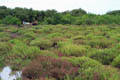
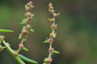
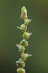
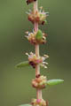
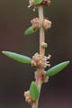
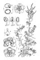

Common name : Common indian salt wort
Common name in Tamil : Uppukeerai, vellakreerai
Common name in Telugu : Illakura
Common name in Singhalese : Umunddi, umiri






Diagnostic characters
Botany & morphology
Ecology
Distribution
Undershrubs upto 70-cm tall, stems glabrous, much branched. Leaves fleshy, purple. Flowers in small globose clusters.
Leaves simple, alternate, exstipulate, fleshy, terete, linear, sickle - shaped when young, base truncate, 1 - 2.5 x 1 - 2 cm.
Inflorescence terminal panicled spikes.
Flowers whitish-green, minute, bisexual, bracteate and 2 – bracteolate; perianth short, calycine, globose or urceolate, 5 - lobed; stamens 5, filaments short, anthers rather large; ovary ovoid, sessile, adnate below to perianth, stigmas 3 and papillose.
Fruits spongy utricle included in perianth; seed orbicular.
Crassulent halophytes of the back-mangroves zone. Common on mud flats and salt marshes.
Pantropical.
Top of the page